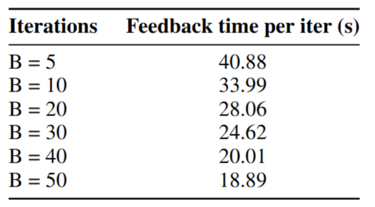
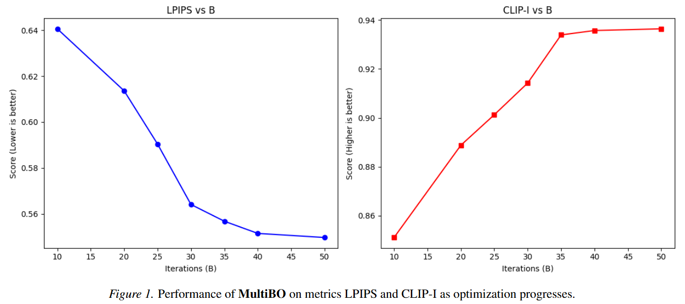
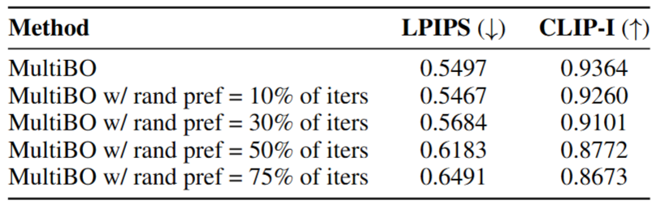
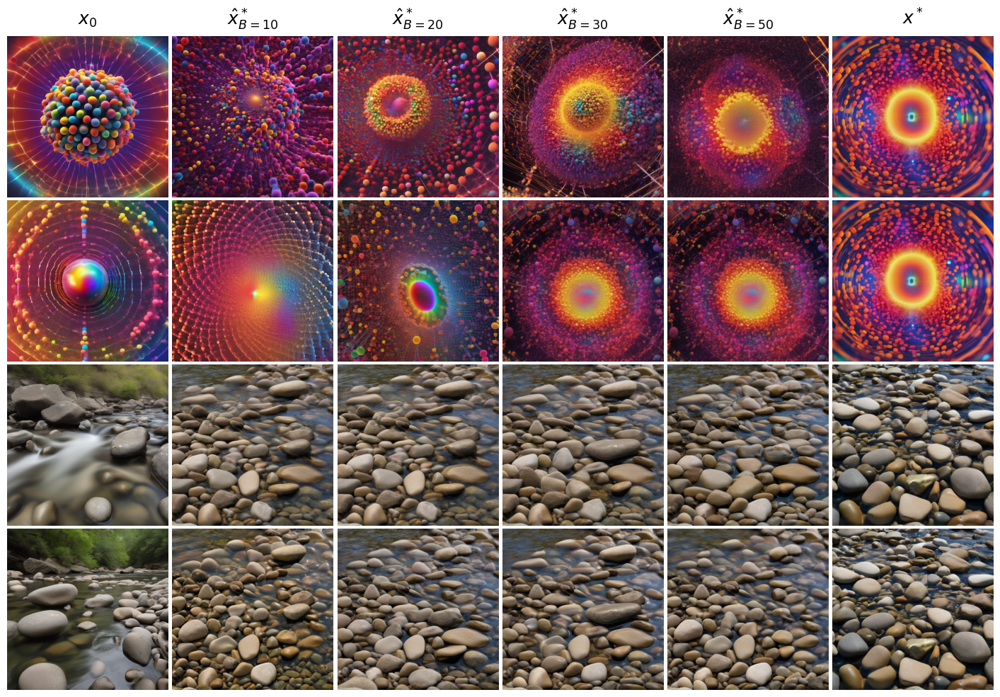
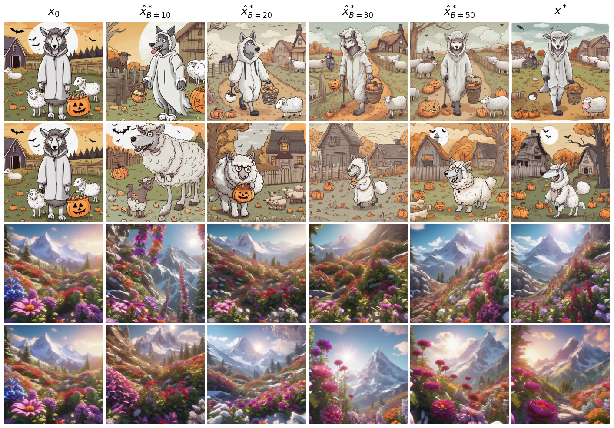
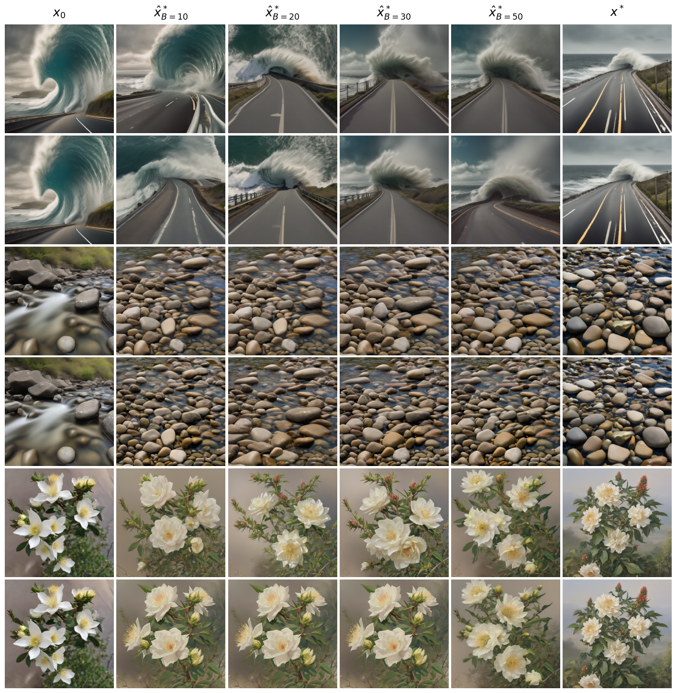
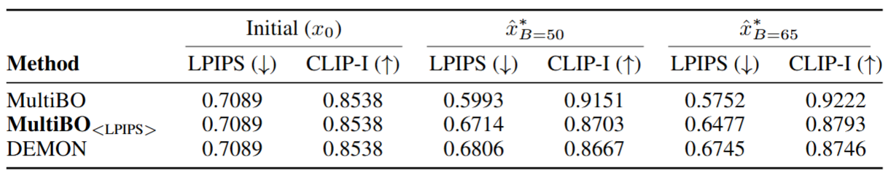
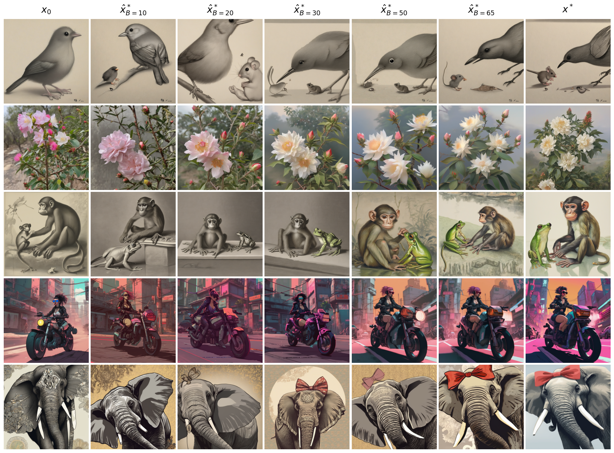
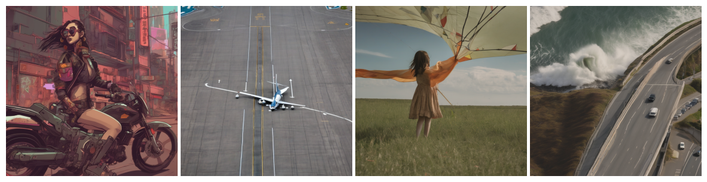

R.Table 1: Memory and time analysis of MultiBO, and baselines: MultiBO_<LPIPS> and DEMON choose generate. Base SDXL model memory = 8.5 GB.
We report 5 sets of results: (1) quantitative metrics, (2) memory usage of different methods, (3) average per iteration image generation time, BO processing time, human feedback time, and the combined
time, (4) total generation time, human feedback time, and combined time until convergence, and (5) average number of iterations and corresponding images to convergence. MultiBO and the baselines
are assumed to have converged if the resulting image \(\hat{x}^*\) of two successive iterations have a difference in LPIPS score \( < 10^{-2} \).

R.Table 2: Human feedback time across different iterations (optimization progress).
2. Performance across Iterations, B

R.Figure 1: Performance of MultiBO on metrics LPIPS (a) and CLIP-I (b) as optimization progresses. Sample distribution (c) vs B iterations to
converge. R.Figure 2: Qualitative Examples when MultiBO converges in B < 50, mostly converging around B = 20 - 30. For prompts: "A peaceful, nature-filled landscape with vibrant flowers and trees and a serene cloud-filled sky.",
"a stunning 3d render of towering, giant blooming plants with vibrant, colorful flowers on a picturesque mountain landscape. sunlight dances on the petals, creating an enchanting scene as the wind gently sways the plants, with snow-capped peaks in the distance.",
"a tidal wave approaching a coastal road","The smooth, glossy finish of the ceramic vase accentuated the vibrant colors of the flowers, a stunning centerpiece of beauty.","The smooth, cool surface of the river rocks were perfect for skipping across the water's surface.",
"A wolf wearing a sheep halloween costume going trick-or-treating at the farm", "Amidst a stormy, apocalyptic skyline, a masked warrior stands resolute, adorned in intricate armor and a flowing cape. Lightning illuminates the dark clouds behind him, highlighting his steely determination.
With a futuristic city in ruins at his back and a red sword in hand, he embodies the fusion of ancient valor and advanced technology, ready to face the chaos ahead."
3. Performance in Presence of Inconsistent User Preference

R.Table 3: Impact of unreliable user preference on MultiBO performance (B=50). R.Figure 3: Qualitative Examples with different amounts ($10, 30, 50, 75 \%$) of unreliable user preference input to MultiBO (B=50). For prompts: "A person in a suit holding a sword.", "A forest with blue flowers illustrated in a digital matte style by Dan Mumford and M.W Kaluta.",
"A swirling, multicolored portal emerges from the depths of an ocean of coffee, with waves of the rich liquid gently rippling outward. The portal engulfs a coffee cup, which serves as a gateway to a fantastical dimension. The surrounding digital art landscape reflects the colors of the portal,
creating an alluring scene of endless possibilities.","an electron cloud model is displayed in vibrant colors with a light spectrum background, showcasing the probability distribution of electrons around the nucleus. the image resembles digital art with pixelated elements, bringing a modern,
educational twist to atomic structure visualization.", "The fragrant flowers bloomed on the sturdy stem and the thorny bush.", "A girl is holding a large kite on a grassy field.", "a tidal wave approaching a coastal road", "a dog and a frog".
4. Randomizations

R.Figure 4: Qualitative Examples for different starts $x_0$ and same target $x^*$. For prompts: "an electron cloud model is displayed in vibrant colors with a light spectrum background, showcasing the probability distribution of electrons around the nucleus. the image resembles digital
art with pixelated elements, bringing a modern, educational twist to atomic structure visualization.","The smooth, cool surface of the river rocks were perfect for skipping across the water's surface."

R.Figure 5: Qualitative Examples for same start $x_0$ and different targets $x^*$:. For prompts: "A wolf wearing a sheep halloween costume going trick-or-treating at the farm", "a stunning 3d render of towering, giant blooming plants with vibrant, colorful flowers on a picturesque mountain landscape.
sunlight dances on the petals, creating an enchanting scene as the wind gently sways the plants, with snow-capped peaks in the distance."

R.Figure 6: Qualitative Examples for same start $x_0$ and same target $x^*$ for two MultiBO runs with different optimization seeds. For prompts: "a tidal wave approaching a coastal road", "The smooth, cool surface of the river rocks were perfect for skipping across the water's surface.", "The fragrant
flowers bloomed on the sturdy stem and the thorny bush."
5. Performance for Far-away Starts

R.Table 4: Quantitave metrics LPIPS and CLIP-I computed between target \(x^*\) and starting point \(x_0\), results \(\hat{x}^*\) after B=50, and B=65
iterations respectively of MultiBO, and baselines: MultiBO_<LPIPS> and DEMON \textit{choose generate}.

R.Figure 7: Qualitative Examples of MultiBO for far away starting images \(x_0\) (missing objects, wrong colors, etc.). For prompts: "a bird and a mouse", "The fragrant flowers bloomed on the sturdy stem and the thorny bush.", "a monkey and a frog", "A cyberpunk woman on a motorbike drives away down
a street while wearing sunglasses.", "a elephant with a bow".
6. Attention Warping Artifacts

R.Figure 8: A few Examples of Attention Warping artifacts.